Photography Hobby
Right after my graduation, I joined DBS SEED Graduate programme. SEED programme is a highly competitive GA programme by DBS bank, to train and equip individuals with technological skills. DBS Bank has pride itself to be a tech company instead of a traditional bank, hoping one day it will become as good as the FAANG companies hence the GANDALF journey (D for DBS).
I joined the Institutional Banking Global Technology department and was responsible for the Digital Channels for Online Corporate Banking, well known as IDEAL. I had started off as a iOS developer for my 1st rotation to get a taste of application development and became a project manager & business analyst role for my 2nd rotation.
The second role is more unique in a sense that I have to be involved in every phase of the development. I will be going indepth in the later session.
IDEAL platform in different devices:
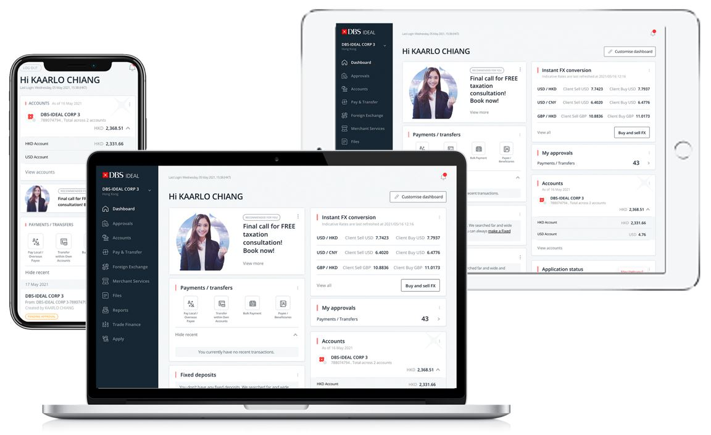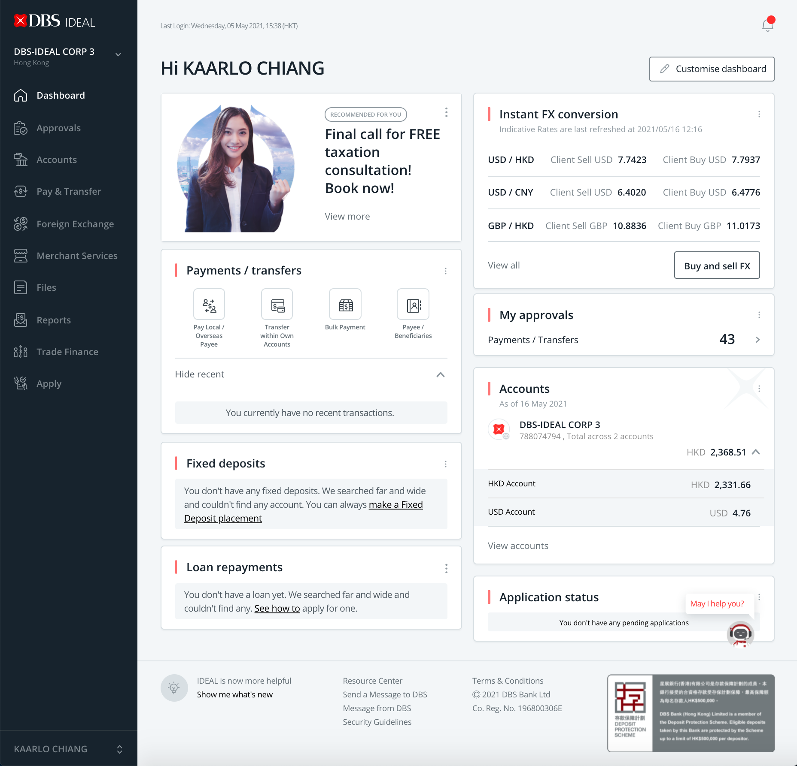IDEAL Shift is a customer facing application for Corporate banking. Unlike the old IDEAL3 application, IDEAL Shift allows customer to create personalized dashboard to suit their daily needs. IDEAL Shift uses the latest Angular technology to create widget-based dashboard.
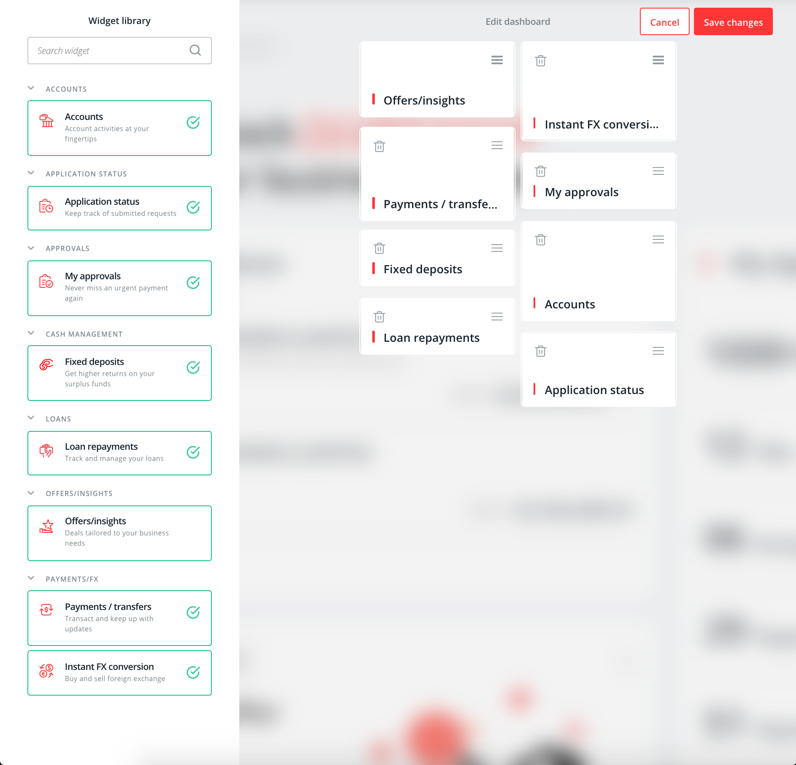Angular 8 allows customer to choose what they want to see in their dashboard and gives customer the freedom to rearrange the widgets. Unlike the old IDEAL3 application, the hybrid nature of IDEAL Shift allows "code once for both mobile and desktop" which helps to save time, manpower and more consistent output in both environment.
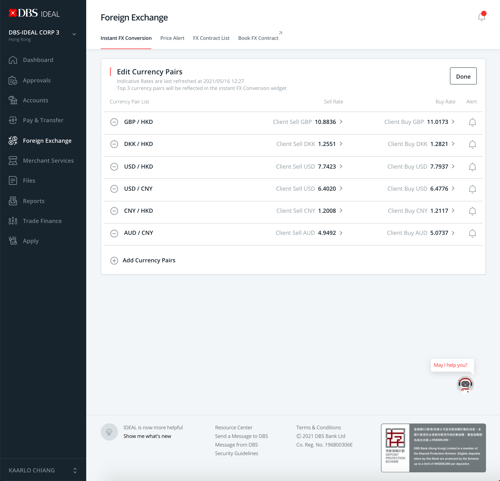Instant FX Conversion allows customer to have a bird eye view of the current foreign exchange rate. They are able to arrange the order of the currency and the top 3 currencies will be shown on the dashboard widget. Customers are also given Tiered rate. This is also a key feature in the HK SME Digibank app as seen in https://www.digfingroup.com/digibanking-hongkong and the volume it has brought to the bank has reached more than a few hundred million USD.
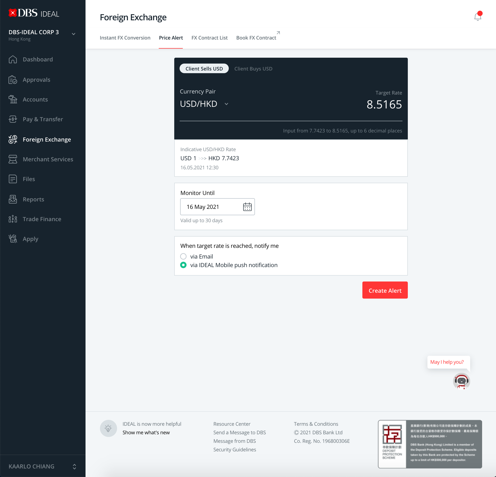To compliment the instant FX Conversion capability, the team has also introduced price alert to make the life of FX trader more convenient. They will no longer need to eye on the FX chart with the price alert. The price alert instantaneously alert the customer via Email or push notification when their price is met. The alert has an integrated payment flow which helps to populate the currency pair. When the price alert has expired, it will prompt the customer to recreate the price alert
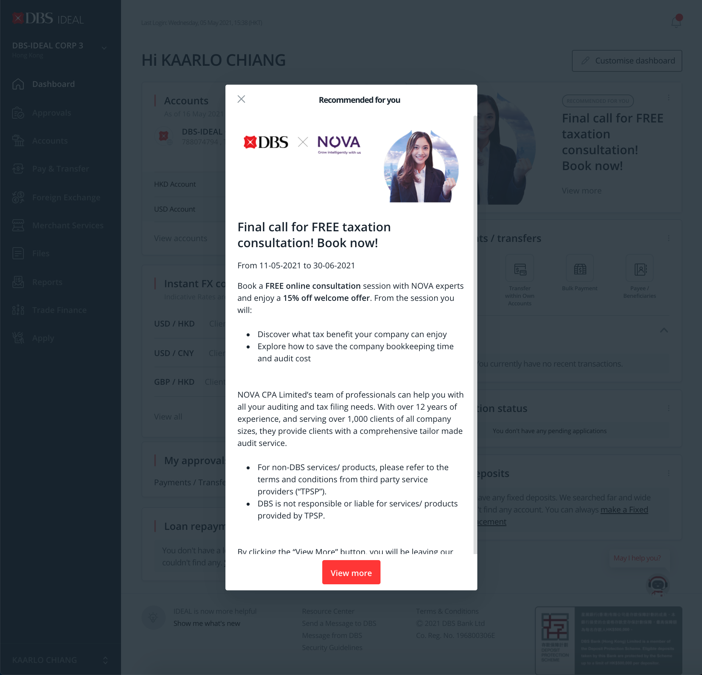Contextual Marketing helps to improve customer experience via presenting personalized advertisement and helpful tips. The campaign banner is shown on the customer dashboard and it can be expanded to show more details.
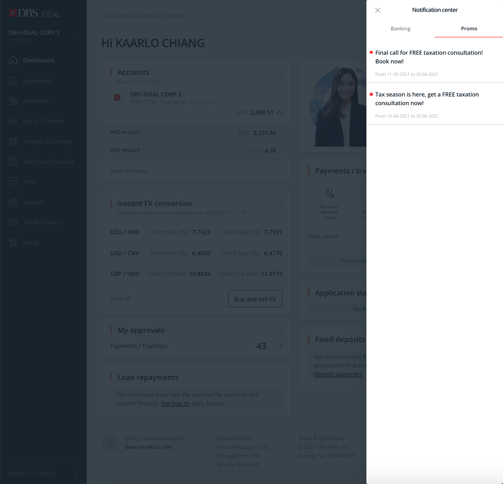While the CMP widget can only show one marketing campaign at a time, the promotion notification support the limitation by providing more asset space for the marketing team. There is also a feedback loop in case Customer dislike or show interest to the campaign. These data are utilised to study the customer behavior and in turn show a more relevant campaigns in the future.
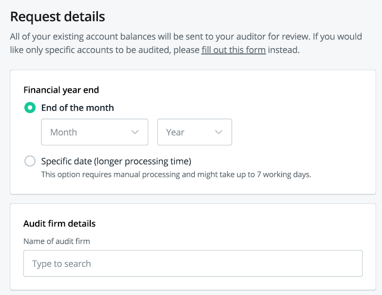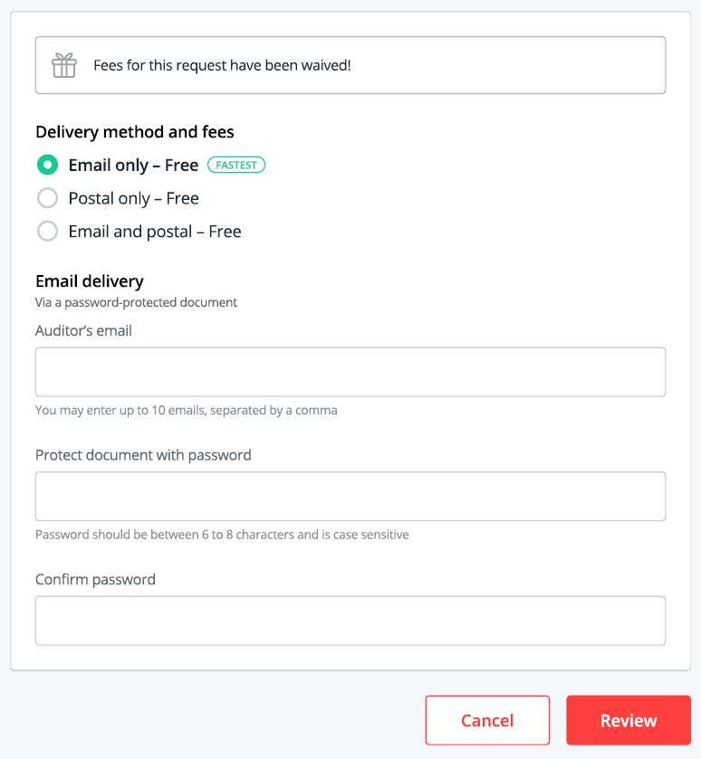Audit confirmation is integrated into IDEAL Shift to streamline the process. In the past, companies will have to submit paper forms and look for auditor which can be extremely time-consuming. With this feature, it allows customer to provide authorisation to DBS to confirm their positions and balances to the auditor without any manual intervention. Appeared on https://www.straitstimes.com/business/banking/dbs-makes-audit-confirmation-easier-for-companies-smes-with-digital-solution
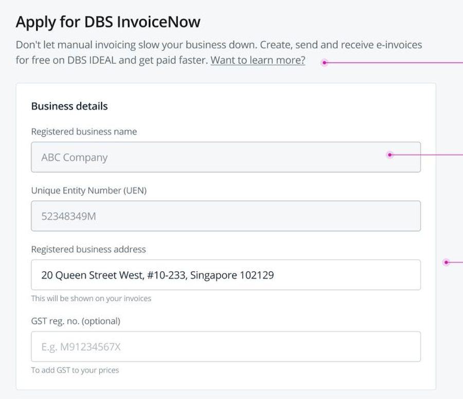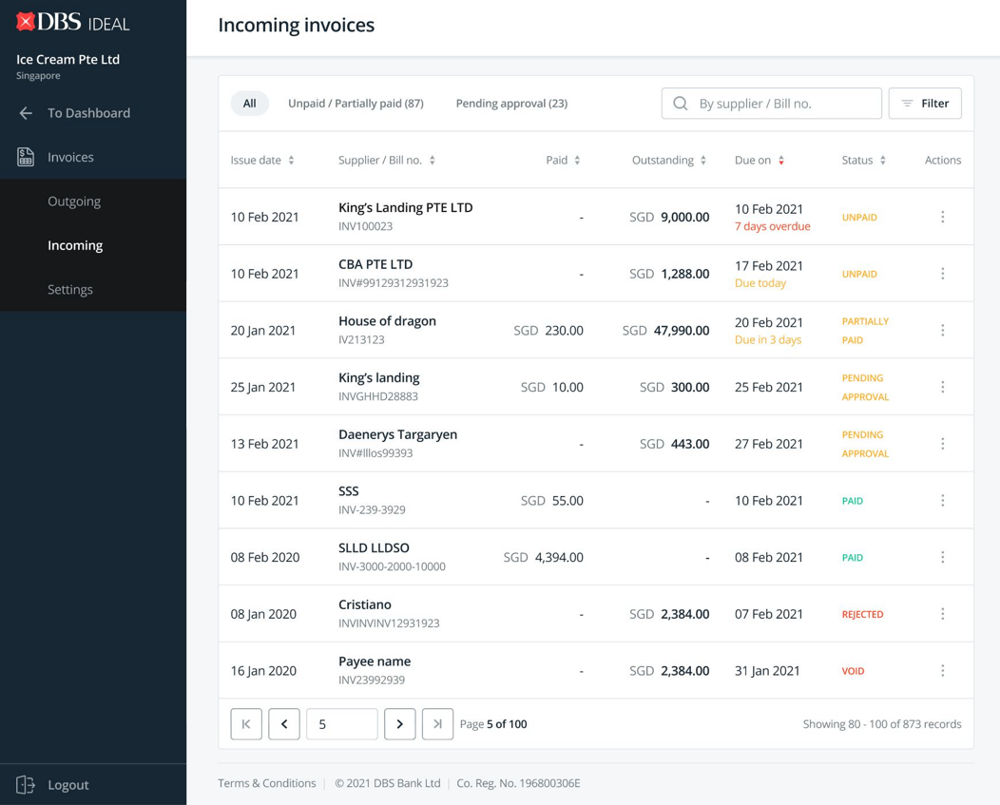InvoiceNow allows organisations to send and recieve invoices easily. I am in charge of the registration portion and also the payment portion in InvoiceNow. Even though InvoiceNow platform is developed by DOXA*, I provided the payment solutions that integrate with IDEAL to give customer a seamless transaction experience. *https://www.businesstimes.com.sg/companies-markets/dbs-doxa-launch-automated-supplier-payments-solution-for-construction-sector
TRUSPLE means TRUst made simPLE is an blockchain initiative by the ANT group. My role here is to provide API services to integrate with the ecosystem. More information: https://www.dbs.com.sg/sme/dbs-trusple
Stop & Recall Payments allow customer to stop a payment when it is still in process or even recall the payment if it has reached the recipient account. There are times when customer send money to the unintended recipient due to human error or fraud.
Subsequent Account Opening allows existing customer to create new account with ease. This functionality allows customer to create new account and copy all the entitlements & signers from existing account.
Customer Self-Administration allows customer to assign entitilements to themselves if they are admin to the company. This helps to cutdown Ops overhead and processing time, at the same time customers would enjoy more administration power within their own company. My scope includes the addition of the trade entitlement as trade became digitalised.
Every release is not perfect and there will always be production issues that are not found during UAT testing. My role here is to look at the production jiras, troubleshoot and assign them to my developers. Before deploying them to production, I would have to arrange uat & regression testing resources and determine the scope of BAU fixes.
Photography Hobby
If you have any questions or opportunities, please feel free to connect with me.